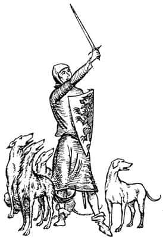
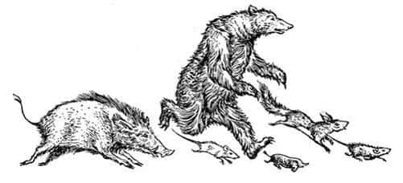
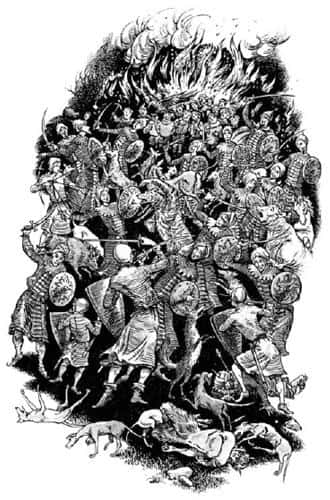

Her Şey Hızlanıyor
Rishda Tarkaan şimşek hızıyla, Kral’ın kılıcının uzanamayacağı kadar geriye sıçradı. Korkak değildi, gerekirse Tirian ve cüceye karşı tek başına savaşabilirdi, ama kartal ve tekboynuza meydan okuyamazdı. Kartalların, insanın yüzüne doğru uçup gözlerini gagaladığını, kanatlarıyla da görmeyi engellediğini biliyordu. Narnialılarla savaşan babasından, okları ya da uzun bir mızrağı olmadığı takdirde hiç kimsenin bir tekboynuzla başa çıkamayacağını duymuştu. Tekboynuz arka ayakları üzerine kalkarak üstünüze atılırdı ve siz toynakları, boynuzu ve dişleriyle uğraşmak zorunda kalırdınız. İşte bunları düşünerek kalabalığa karıştı ve bağırmaya başladı:

“Bana katılın, bana katılın - ömrü uzun olsun - Tisrok’un savaşçıları. Bana gelin sadık Narnialılar, yoksa Taşlan’ın gazabı üzerinize olur!”
Tüm bunların arasında iki şey daha oldu: Maymun tehlikeyi Tarkaan kadar çabuk fark edememişti. Bir-iki saniye boyunca ateşin yanında çömelmiş, yeni gelenlere bakakalmıştı. Tirian hızla sefil yaratığa koştu, ensesinden yakalayıp kaldırdı ve “Kapıyı açın!” diye bağırarak ahıra koştu. Zıpır kapıyı açtı. “Git de gününü gör, Külyutmaz!” dedi Tirian ve Maymun’u karanlığa fırlattı. Cüce kapıyı kaparken ahırın içinde yeşille mavi karışımı kör edici bir ışık parladı, yer sallandı ve garip bir ses duyuldu; korkunç bir kuşun boğuk sesine benziyordu. Hayvanlar inleyip uludu ve bağırmaya başladı, “Taşlan! Bizi ondan koruyun!” Çoğu yere düşmüştü ve yüzlerini kanatları ya da pençeleriyle gizlemeye çalışıyorlardı. Yaşayan yaratıklar arasında en iyi gözlere sahip olan Keskingöz hariç hiç kimse o anda Rishda Tarkaan’ın yüzünü fark edememişti. Keskingöz gördüklerinden, Rishda’nın da diğerleri gibi şaşırıp korktuğunu anlamıştı. “İşte inanmadığı tanrıları çağıran biri daha” diye düşündü Keskingöz, “Eğer gerçekten geldilerse hali nice olacak?”
Aynı anda bir şey daha oldu; bu, o gece yaşanan tek güzel şeydi. Toplantıdaki konuşan köpeklerin hepsi (sayıları on beşti) zıplayarak, sevinçle havlayarak Kral’ın yanına geldi. Hepsi de iri kemikli, güçlü çeneli, muhteşem ve büyük köpeklerdi. Gelişleri sahilde büyük bir dalganın kırılmasına benziyordu; insanı yere düşürecek güçteydi. Bunlar konuşan köpeklerdi, ama sokak köpeği gibi davranıyorlardı. Arka ayakları üzerine dikilip pençelerini insanların omuzlarına koydular ve yüzlerini yalayıp hep bir ağızdan, “Hoş geldiniz! Hoş geldiniz! Biz size yardım edeceğiz, evet, evet, evet. Ne yapmamız gerektiğini söyleyin, nasıl yardım edebiliriz hav, hav, hav?” dediler.
Öylesine güzeldi ki, insanın ağlayası geliyordu. Bu, bekledikleri bir şeydi ve nihayet gerçekleşmişti. Az sonra bir sürü küçük hayvan (fareler, köstebekler, sincaplar vb.) sevinçle tiz çığlıklar atarak pıtır pıtır koşarak geldiler ve “Bakın, bakın. Biz de geldik” dediler. Onlara ayı ve yabandomuzu da eklendiğinde, Eustace tüm olanlara rağmen her şeyin düzeleceğini düşünmeye başladı. Tirian etrafına baktı ve hayvanların çok azının onlara katıldığını fark etti.

“Gelin yanıma! Gelin yanıma!” diye bağırdı. “Görmeyeli korkaklaştınız mı?”
“Cesaret edemiyoruz” diye sızlandı düzinelerce ses. “Taşlan bize kızar. Bizi Taşlan’dan koru.”
“Konuşan atlar nerede?” diye sordu Tirian.
“Biz biliyoruz, biz gördük” dedi tiz sesleriyle fareler. “Maymun onları çalıştırıyordu. Hepsi tepenin aşağısında bağlı durumda.”
“Öyleyse siz küçükler” dedi Tirian, “siz kemirgenler, çiğneyiciler ve fındıkkıranlar, olabildiğince çabuk gidin ve atların bizden yana olup olmadığını öğrenin. Eğer bizden yanalarsa dişlerinizi iplere geçirin, atlar serbest kalana kadar kemirin ve onları buraya getirin.”
“Emredersiniz, efendim” diyen ince sesler duyuldu. O keskin gözlü ve keskin dişli yaratıklar hemen yola çıktı. Tirian onları yola çıkarken görünce sevgiyle gülümsedi. Artık başka şeyler düşünme zamanıydı. Rishda Tarkaan emirler vermeye başlamıştı.
“İleri” dedi. “Eğer becerebilirseniz canlı yakalayın, ahıra fırlatın ya da ahırın içine sürün onları. Hepsi içeri girdiğinde ahırı ateşe verir, onları ulu Tanrı Taş’a adak olarak sunarız.”
“Ne?” dedi Keskingöz kendi kendine. “Taş’a olan inançsızlığını bu şekilde affettirmeye çalışıyor.”
Düşman safları - Rishda’nın güçlerinin yaklaşık yarısı - ilerlemeye başlamıştı ve Tirian’ın pek az zamanı kalmıştı.
“Sola geç Jill, onlar buraya gelene kadar vurabildiğin kadarını vur. Yabandomuzu ve Ayı, Jill’in yanına gidin. Zıpır soluma, Eustace sağıma geçsin. Sağ kanadı sen tut Cevher. Şaşkaloz, sen de ona yardımcı ol ve toynaklarını kullan. Tepemizde uç ve saldır Keskingöz. Siz köpekler, hemen arkamıza geçin. Yakın dövüş başladığında düşman saflarına dalın. Aslan yardımcımız olsun!”
Eustace’in kalbi güm güm atıyordu, cesur olmayı dileyerek öylece durdu. Daha önce bir ejderha ve denizyılanı görmüştü ama, hiçbir şey bu parlak gözlü, esmer yüzlü adamların oluşturduğu hat kadar kanını dondurmamıştı. On beş Calormenli, Narnialı konuşan boğa, Tilki Açıkgöz ve Satir Gürkuyruk oradaydı. Sonra bir tınlamayla hışırtı sesi duyuldu ve bir Calormenli düştü; yine bir tınlama ve hışırtı, düşen satirdi. “Oh, bravo kızım!” dedi Tirian ve düşman saldırıya geçti.
Eustace geçen iki dakikada neler olduğunu asla hatırlayamadı. Rishda Tarkaan’ın uzaktan gelen sesini duyana kadar her şey, ateşinizin 38 derecenin üstünde olduğu zamanlarda gördüğünüz bir rüya gibiydi.
“Geri çekilin. Buraya gelip safları yenileyin.”
Eustace kendine geldi ve Calormenliler’in arkadaşlarının yanına doğru kaçmakta olduklarını gördü. Ama hepsi kaçmıyordu. Cevher’in boynuzladığı ikisi ve Tirian’ın kılıcını geçirdiği biri ölü olarak yatıyordu. Tilki ölmüş, ayaklarının dibinde yatıyor, Eustace onu öldürenin kendisi olup olmadığını merak ediyordu. Jill’in okuyla gözünden vurulmuş ve yabandomuzunun dişleriyle karnı deşilmiş olan boğa da ölmüştü. Bizimkiler de kayıp vermişti: Üç köpek ölmüştü, dördüncüsü hatların gerisinde topallayıp inliyordu. Ayı yere uzanmıştı ve güçlükle hareket ediyordu. Sonra korkunç bir şekilde şaşkın, gırtlaktan konuşarak, “Ben - ben anla - anlamıyorum” diye mırıldandı, kocaman kafasını sanki uykuya dalan bir bebek gibi sessizce çimlere yasladı ve bir daha hareket etmedi.
İlk saldırı başarısızlığa uğramıştı. Eustace bundan pek memnun kalmamıştı; çok susamıştı ve kolu ağrıyordu.
Bozguna uğramış Calormenliler komutanlarına geri dönerken cüceler onlarla alay etmeye başladı.
“Bu yeterli mi ha?” diye bağırıyorlardı. “Hoşunuza gitmedi mi? Sizi ölüme göndereceğine, neden büyük Tarkaan’ın kendisi gelip savaşmıyor? Zavallılar!”
“Cüceler!” diye bağırdı Tirian. “Gelin buraya ve kılıçlarınızı kullanın, dillerinizi değil. Hâlâ zaman var. Narnialı cüceler! Siz iyi savaşırsınız, biliyorum. Ait olduğunuz yere dönün.”
“Öyle mi?” dedi cüceler küçümseyerek. “Olmaz. Sen de diğerleri kadar sahtekârsın. Biz kral falan istemiyoruz. Cüceler cüceler içindir. Yuuuh!”
Sonra davul çalınmaya başladı. Bu kez cüce davulu değil, boğa derisinden yapılmış büyük Calormen davuluydu çalan. Çocuklar bu sesten nefret etti. Bum - bum - ba-da-bum diye devam ediyordu. Ne anlama geldiğini bilselerdi nefretleri kat kat artardı. Tirian bunun anlamını biliyordu. Yakınlarda bir yerde başka Calormen birlikleri vardı ve Rishda Tarkaan onları yardıma çağırıyordu. Tirian ve Cevher üzgün üzgün birbirlerine baktılar. O gece kazanacaklarına dair bir umut belirmişti içlerinde; ama yeni bir düşman birliği gelirse her şey bitmiş olacaktı.
Tirian umutsuzca etrafına baktı. Birçok Narnialı ya ihanet ettiği için ya da Taşlan’dan korktuğu için, Calormenliler’le beraberdi. Bazıları sessizce oturmuş olanları izliyor ve tarafsız kalacağa benziyordu. Hayvan sayısı azalmıştı, kavga esnasında birçoğu sessizce uzaklaşmıştı.

Bum - bum - ba-da-bum diye devam ediyordu korkunç davul. Sonra başka bir ses duyuldu. “Dinleyin!” dedi Cevher. “Bakın!” dedi Keskingöz. Az sonra sesin ne anlama geldiğinden kuşkuları kalmamıştı. Toynak gümbürtüsü duyuluyor, başlar bir görünüp bir kayboluyor, geniş burun delikleriyle çok sayıda Narnialı konuşan at tepeye doğru koşturuyordu. Kemirgenler işlerini iyi yapmıştı.
Cüce Zıpır ve çocuklar tam tezahürat yapmak için ağızlarını açmışlardı ki, etrafı aniden yay ve ok sesleri doldurdu. Cüceler ok atıyor - Jill gözlerine inanamamıştı ama - atları vurmaya çalışıyorlardı. Cüceler ölümcül oklar atabilen iyi okçulardır. Atlar birbiri ardına yuvarlanmaya başladı. O soylu hayvanlardan biri bile Kral’a ulaşamadı.
“Küçük domuzlar” diye bağırdı Eustace öfkeyle yürüyerek. “İğrenç, pis, hain, vahşi küçük adamlar.” Cevher, “O cücelere saldırıp her seferinde on tanesini boynuzuma dizeyim mi, efendim?” diye sordu. Ne var ki, Tirian taş gibi soğuk bir yüzle, “Yerinde dur Cevher. Canım, ağlaman gerekiyorsa (bunu Jill’e söylüyordu) yüzünü yana çevir ve yayının ibrişimini ıslatmamaya dikkat et” dedi. “Sakin ol Eustace. Bir hizmetçi gibi herkesi azarlama. Savaşçılar azarlanmaz. Anladıkları tek dil nazik sözler ya da güçlü darbelerdir.”
Cüceler Eustace’le alay etmeye başlamıştı. “Küçük çocuk, bu sana sürpriz oldu ha? Bizi sizden yana sanmıştın, değil mi? Korkma. Konuşan at istemiyoruz biz. Ne sizin ne de diğerlerinin kazanmasını istiyoruz. Bizi kendi saflarınıza çekemezsiniz. Cüceler cüceler içindir.”
Rishda Tarkaan hâlâ adamlarıyla konuşuyordu; kuşkusuz bir sonraki saldırının planını yapıyor ve ilk seferinde tüm güçlerini göndermiş olmayı arzuluyordu. Davul çalmaya devam ediyordu. Sonra, çok uzaklardan bir davul sesinin cevap olarak geldiği duyuldu; Tirian ve dostları dehşet içindeydi. Diğer Calormen birlikleri Rishda’nın sinyalini duymuş, ona yardıma geliyordu. Tirian’ın yüz ifadesinden tüm umutlarını yitirdiğini anlamak imkânsızdı.
“Dinleyin” dedi sakin bir sesle, “oradaki vicdansızlar, dostlarının katılımıyla güçlenmeden önce saldırmamız gerekiyor.”
“Sırtımızı ahıra verdiğimizi unutmayın, efendim” dedi Zıpır, “ilerlersek çembere alınıp kılıçlarla çevrelenmeyecek miyiz?”
“Bizi ahıra sokmayı planlamasalardı” dedi Tirian, “ben de senin dediğini yapardım. Ahırın kapısından ne kadar uzakta olursak o kadar iyi.”
“Kral haklı” dedi Keskingöz. “Bu lanetli ahırdan ve içinde yaşayan cinden her ne pahasına olursa olsun uzak durmalıyız.”
“Evet, uzaklaşalım” dedi Eustace. “Görüntüsünden bile nefret etmeye başladım.”
“Güzel” dedi Tirian. “Şimdi şuraya, sol tarafa bakın. Ateşin ışığında mermer gibi bembeyaz parlayan büyük bir kaya göreceksiniz. Önce Calormenliler’in üzerine çökeceğiz. Sen bayan, solumuza geç ve düşman saflarına hızla ok yağdır ve sen kartal, sağ taraftan yüzlerine doğru uç. Bu arada biz geri kalanlar saldıracağız. Jill, düşmana yaklaştığımızda bizi vurma tehlikesi olmadan onları nişan alamazsan hemen beyaz kayaya git ve bekle. Siz diğerleri, kavga ederken bile kulaklarınız açık olsun. Sayımız az, onları birkaç dakikada bozguna uğratamazsak asla başaramayız. Ben geriye diye bağırır bağırmaz, beyaz kayaya, Jill’in yanına koşun. Orada arkamızı sağlama almış oluruz ve biraz nefeslenebiliriz. Şimdi yerine geç Jill.”
Yalnız kaldığını düşünen Jill yedi metre kadar koştu, sağ ayağını geriye sol ayağını ileriye koyarak atışa hazırlandı. Ellerinin titrememesi için dua etti. İlk oku düşmana doğru uçup başlarının üzerinden geçtiğinde, “Bu çok kötü bir atıştı!” dedi kendi kendine. Hemen yayına bir ok daha yerleştirdi; okun hızının çok önemli olduğunu biliyordu. Büyük ve siyah bir şeyin Calormenliler’in yüzüne doğru hamle yaptığını gördü. Bu Keskingöz’dü. Önce adamlardan biri, daha sonra ikincisi kılıcını atıp gözlerini korumak için iki eliyle yüzünü kapattı. Sonra, Jill’in oklarından biri bir adamı vurdu, bir diğeri de düşmandan yanaymış gibi görünen Narnialı bir kurttu. Ok atmayı bırakmak zorunda kaldığında aradan sadece birkaç saniye geçmişti. Yabandomuzu dişleri, Cevher boynuzu, köpekler derin ulumaları, Tirian ve grubu parlak kılıçlarıyla, sanki yüz metre yarışına çıkmış gibi düşmana doğru koşuyordu. Jill, Calormenliler’in o kadar hazırlıksız görünmelerine şaşırmıştı. Düşman saflarında meydana gelen bu karışıklığın, o ve kartalın uğraşları sonucu oluştuğunu anlayamamıştı. Bir yandan suratlarına oklar yağıyor bir yandan da kartal gagalarının saldırısına uğruyorlarsa, azimle savaşmayı sürdürebilmek öyle her ordunun harcı değildir.
“Ah, bravo, bravo!” diye bağırdı Jill. Kral’ın grubu düşmanlarını biçerek ilerliyordu. Tekboynuz sanki dirgenle saman savururmuş gibi adamları savuruyordu. Eustace bile (kılıç hakkında pek bir şey bilmemesine rağmen) mükemmel bir şekilde savaşıyormuş gibi görünüyordu. Köpekler Calormenliler’in gırtlaklarına yapışmıştı. Plan yürüyordu! Zafer onlarındı - ama birden korkunç bir şey fark etti. Kılıç darbeleriyle yere yığılmalarına rağmen savaşan Calormenliler’in sayısında bir azalma olmuyordu. Sayıları savaşın başladığı andan daha fazlaydı. Her saniye çoğalıyor, her yönden geliyorlardı. Bunlar yeni gelen Calormenliler’di. Yeni gelenlerin mızrakları vardı. O kadar kalabalıklardı ki Jill dostlarını zorlukla seçebiliyordu. Tirian’ın sesi duyuldu:
“Geri çekilin! Kayaya!”
Davul düşmanın işine yaramış, düşman güçlenmişti.